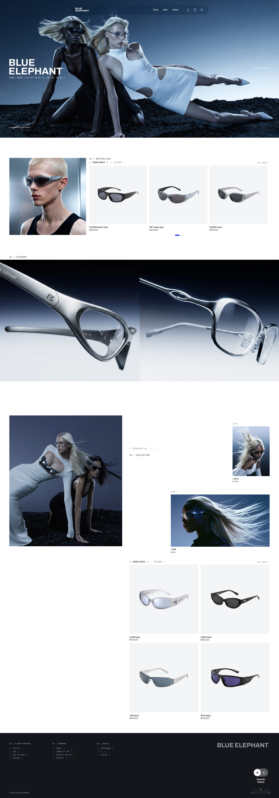

Project
Blue
Elephant
(04)
- Project Type
- Web Redesign
- Tools
- HTML, CSS, Javascript, Photoshop, Illustrator, Midjourney, Higgsfield
- Role
- UI/UX Design, Web Publishing, Responsive UI/UX
- Contribution
- 100%
Description
블루엘리펀트는 레트로하면서 실험적인 디자인을 합리적인 가격에 제안하는 아이웨어 브랜드입니다.
본 프로젝트는 브랜드가 가진 소재 경쟁력을 더욱 효과적으로 전달하기 위한 리뉴얼에 초점을 맞추었습니다. 기존 사이트의 배너 캐러셀과 메가메뉴를 정리하고, 모노스페이스 타이포와 좌표 라벨로 브랜드 톤앤매너를 재구성하여 레이아웃을 간결하게 정돈했습니다. 특히 Midjourney, Higgsfield, Nano Banana AI 툴을 접목하여 브랜드 고유의 감각적인 에디토리얼 비주얼을 한층 높였습니다. 브래킷 호버 인터랙션과 다크모드, 50rem 미디어 쿼리 기반의 반응형 레이아웃을 더해 방문자가 모바일 환경에서도 자연스럽게 브랜드를 탐색하면서도 실험적인 인상을 느낄 수 있는 흐름을 설계했습니다.
Date
2026.09

0%
Scroll
